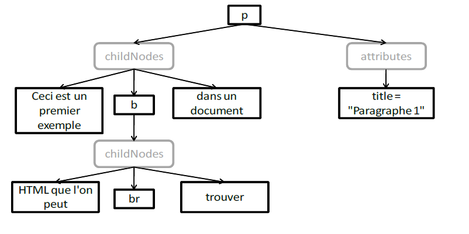

Voici un exemple de représentation du code HTML sous forme d'arbre DOM.
Soit le code suivant :
<p title="Paragraphe 1">
Ceci est un premier exemple
<b>HTML que l'on peut <br/>trouver</b>
dans un document
</p>
Voici la représentation dans l'arbre DOM :
Cet arbre est rattaché à d'autres noeuds... Le tout étant forcément rattaché au noeud
windows.document. Le paragraphe peut être contenu dans d'autres éléments (div,...).
Cet exemple comprend 3 types de noeuds :
Créer un fichier HTML vierge.
Insérer le paragraphe précédent dans la page.
Répéter l'opération pour insérer 2 nouveaux paragraphes en modifiant :
Ecrire une fonction qui sera lancée au chargement de la page.
Cette fonction lancera une boite de dialogue alert contenant l'information demandée dans les questions qui suivent.
Utilisation des méthodes de l'interface Document.
A l'aide de la méthode getElementById, afficher la valeur de l'attribut title du second paragraphe.
Pour retrouver la valeur de l'attribut, vous pouvez utiliser la méthode getAttribute de
l'interface Element.
Même question en utilisant la méthode getElementsByTagName.
Même question en utilisant l'attribut childNodes de l'interface Node.
A partir de ces éléments, vous devez pouvoir appliquer un autre childNodes permettant de repérer
l'élément <body> : document.childNodes[1].childNodes[???].
document.childNodes[1] correspondant à l'élément <html>...
Avertissement : Pour compliquer le problème, les navigateurs ne réagissent pas de la même façon :
Répéter l'opération précédente en simplifiant l'accès avec les attributs de l'élément document :
documentElement : accès direct à l'élément <html>